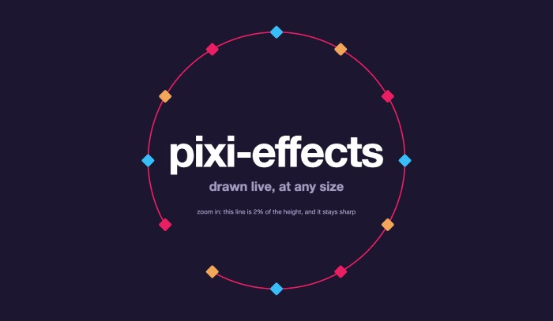
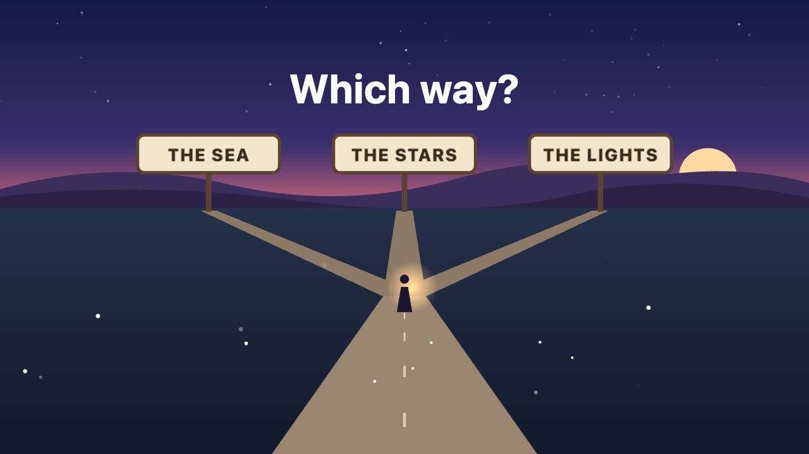
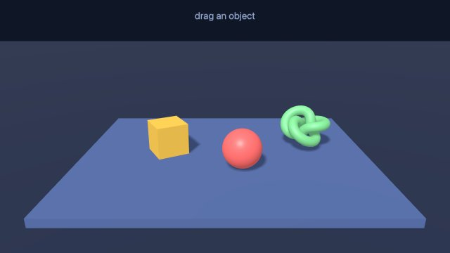

This is not an MP4.
Every video on this site is a small web page that draws itself, on a player it shares with every other video (PixiJS and pixi-effects, loaded once). Because the video is its source, it can do things a video file cannot.
Light
A video file stores every pixel of every frame. The page stores what to draw, and borrows a player it shares with every other video.
Ask your AI: “Give me the page as well as the MP4, so I can put it on my site.”
The same 6 seconds at 640 × 360. The page needs its player, PixiJS and pixi-effects, which a browser loads once for the whole site (measured on the wire, from the CDNs). Every further video is a few KB, and it plays at 4K without growing.
Sharp at any zoom
Zoom in on both. The MP4 stretches its pixels. The page draws the picture again at the new size.
Ask your AI: “Write every size as a share of the width and height, so it stays sharp on any screen.”

Changes while you watch
Type a title, pick a colour. The video is built again in a few milliseconds and keeps playing from the same frame.
Ask your AI: “Make the name and the colour variables, so I can change them without asking you again.”
Touchable
A video can wait for a choice, or let you move what is in it. Left alone, each one still exports as an ordinary video.
Ask your AI: “Make a 15-second video that stops at a fork in the road and lets the viewer choose one of three endings by clicking. Untouched, it should still export as an ordinary video.”


An MP4 when you need one
A frame is the same picture on every machine, so the page can write the video file itself, in the browser. Open the piece with its player bar and press the download button.
Ask your AI: “Render it as an MP4 too.”
Put it on your own site
One element, wherever HTML goes. Host the page next to your site, or point at this one.
Ask your AI: “Give me the HTML to embed it on my page.”
<iframe src="https://yjmtmtk.github.io/pixi-effects/lab/pieces/compare.html"
width="640" height="360" loading="lazy"
title="A video that draws itself"></iframe>